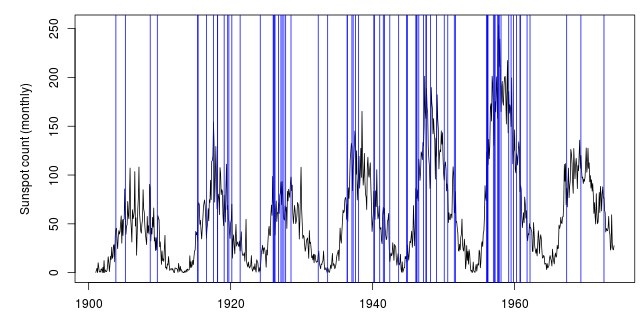

[1] Kappenman, J. 'A perfect storm of planetary proportions.' IEEE Spectrum. [2] Behr, P. 'This week's solar flare illuminates the grid's vulnerability'. New York Times.
#Example calculation -- severe storm count from 1900 to 1938
storms <- read.table("severestorms.txt", header=T)
storms$date <- storms$year + (storms$month - 1)/12
sum(storms$date >= 1900 & storms$date <= 1938)
## [1] 34
